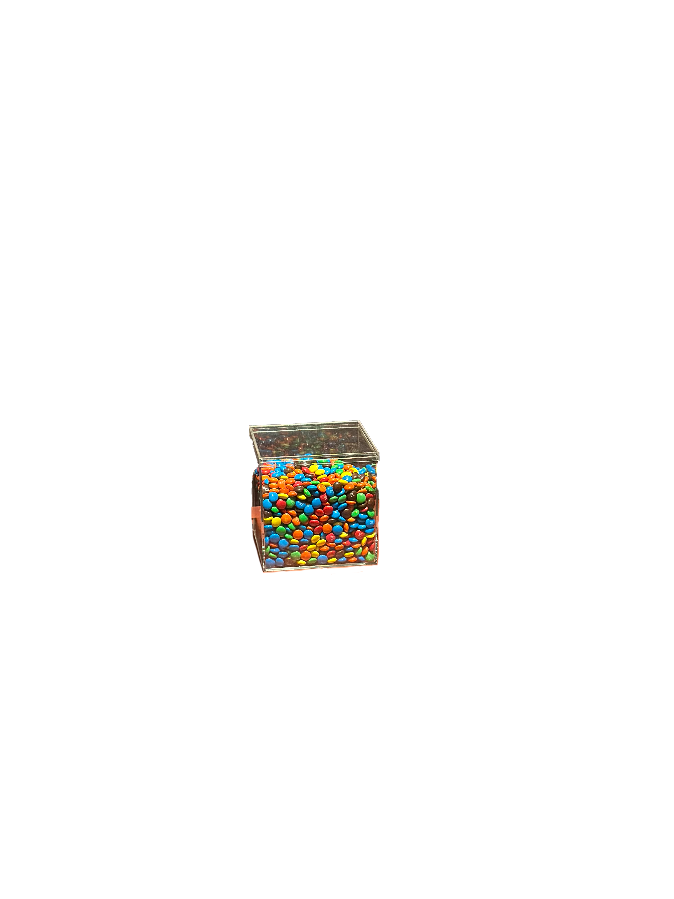
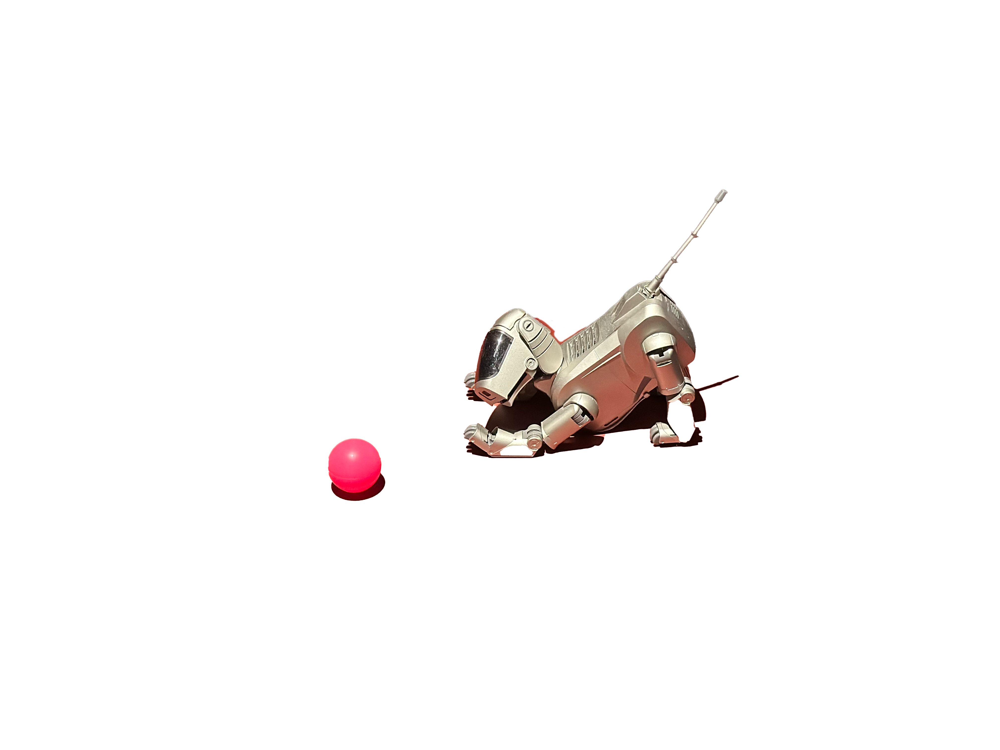

M&M's
late 1930s, by Forrest Mars
transforms the mass-produced everyday object of sugar-coated candy as a portrayal of consumer culture and the commercialization of art

Ceramics: Milk or Oil Can, Water Carafe, Oil Platter, Salt Cellar, Vinegar Flask
2007, by Aldo Bakker
transforms everyday vessels into minimalistic sculptures, delivering the simplistic beauty and balance between function, material

AIBO entertainment robot (ERS-110)
1999, Hajime Sorayama
portrays modern society's evolving intimacy with machines; the development of artificial companionship and the emotional potential of technology.
